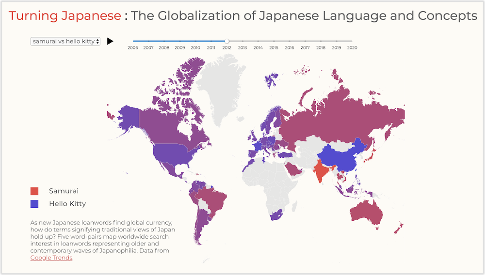
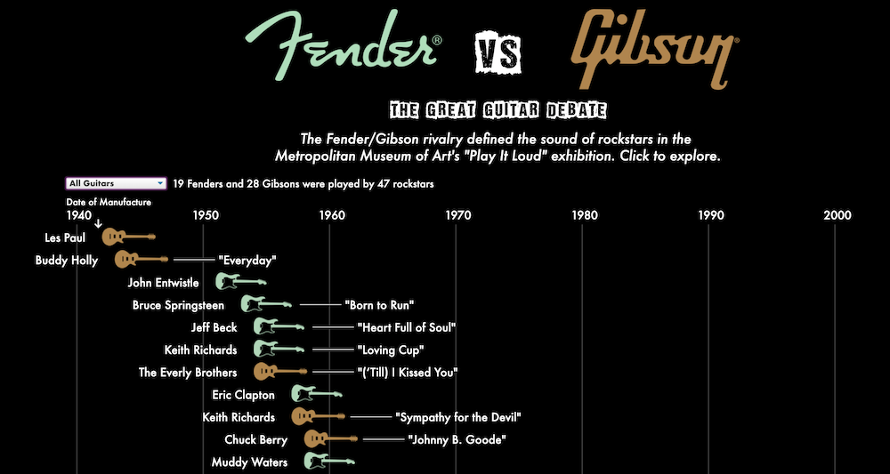

Turning Japanese
As we enter the Asian century, "Turning Japanese" investigates how Japan became a cultural giant by tracing the journey of Japanese loanwords into English through the Oxford English Dictionary, New York Times and Google Search.
View projectFender vs Gibson
An interactive data visualization that explores the Fender-Gibson guitar brand rivalry. Based on the Metropolitan Museum of Art's "Play It Loud" exhibition.
View projectAsian America
Asian American population growth and distribution, built with D3.js.
View projectNTV Dashboard

An interactive dashboard analyzing news video distribution by topic, built with p5.js and jQuery.
View projectNew York Times Article

The artistic response to Japan's 2011 Fukushima nuclear disaster.
View article